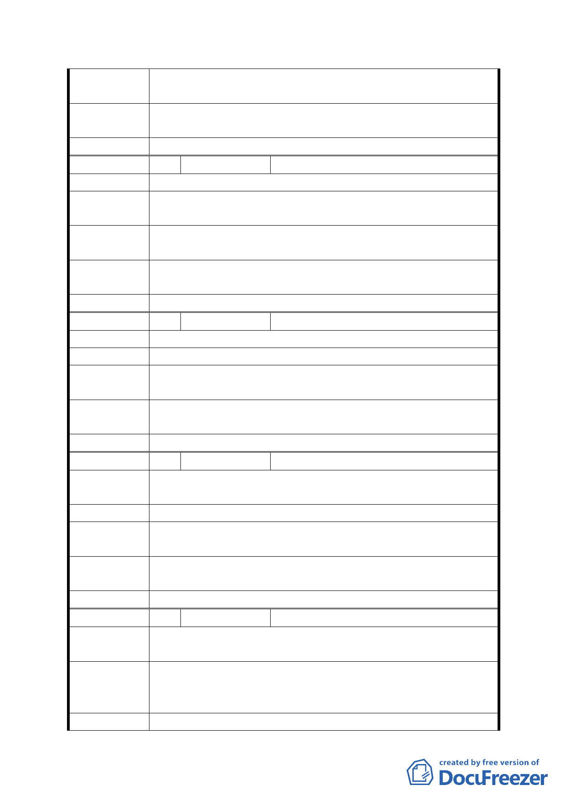

第五次專案小組
審查結論
同編號 1
市府修正後
回應說明
同編號 7
委員會決議 同意依「市府修正後回應說明」辦理
編 號 31 陳情人
李惠彰
陳 情 理 由 貯留池不需要，憲兵營變高級住商區。
建議
辦
法
1. 辛亥捷運站周邊之環境改善。
2. 貯留池不需要建立。
第五次專案小組
審查結論
同編號 1
市府修正後
回應說明
同編號 7
委員會決議 同意依「市府修正後回應說明」辦理
編 號 32 陳情人
劉桂汮
陳 情 理 由 希望軍營遷走。
建 議 辦 法 運動場或住宅
第五次專案小組
審查結論
同編號 1
市府修正後
回應說明
同編號 7、18。
委員會決議 同意依「市府修正後回應說明」辦理
編 號 33 陳情人
洪翠翎
陳情理由
1. 不要蓄洪池。
2. 都市更新計畫。
建 議 辦 法 希望興建室內游泳池或健身中心以供市民有地方運動。
第五次專案小組
審查結論
同編號 1
市府修正後
回應說明
同編號 7、18。
委員會決議 同意依「市府修正後回應說明」辦理
編 號 34 陳情人
洪宏俊
陳情理由
1. 不要蓄洪池。
2. 更新都市計畫。
1. 興建社區公園或民眾休閒公園。
建 議 辦 法 2. 興建游泳池。
3. 興建圖書館。
第五次專案小組 同編號 1
- 34 -